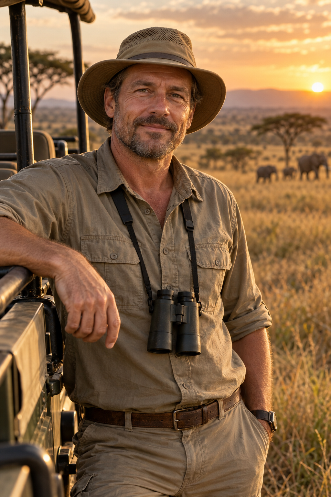

A época decide tudo
A Grande Migração se move o ano inteiro. Chegar no Serengeti na semana errada é atravessar o mundo pra ver savana vazia.
African Safari Specialists
Roteiros de safári e da Grande Migração desenhados por quem conhece cada estação, cada reserva e cada lodge por dentro. Você chega no lugar certo, na época certa, pra ver o que veio ver.
Quero meu roteiro de safári ↗Atendimento exclusivo, poucos grupos por temporada.
O extraordinário está nos detalhes
SELVA. SILÊNCIO. IMENSIDÃO.Onde cada detalhe do roteiro decide a viagem da sua vida.
A experiência faz a diferença
Você pode gastar o valor de um carro numa viagem à África e ainda assim ver pouco, se o roteiro for montado por quem não pisou lá. A diferença entre a viagem da sua vida e uma decepção cara mora em detalhes que só a experiência ensina.
A Grande Migração se move o ano inteiro. Chegar no Serengeti na semana errada é atravessar o mundo pra ver savana vazia.
Lodge mal localizado, transfer mal calculado, reserva sem os animais que você quer ver. Na África, um erro de planejamento não tem conserto no dia seguinte.
Safári exige conhecer reservas, estações e operadores locais de perto. É terreno que agência genérica não domina e blog não ensina.
Uma escolha que diz muito sobre você
Expectativas alinhadas, desde o início
O processo
Quatro passos.
Uma África inteiramente sua.
Responda algumas perguntas rápidas sobre o safári que você quer viver. Leva menos de 2 minutos.
Depois de preencher, você cai direto no meu WhatsApp. A gente conversa, acerta os detalhes e agenda a primeira reunião.
Uma conversa pra entender a fundo o que você quer viver na África: quais animais, qual ritmo, qual nível de conforto e o que não pode faltar.
Em até 7 dias eu apresento o roteiro completo, com época certa, reservas certas e a logística toda pensada. Você sai pronto pra fechar com segurança.

Quem desenha a sua expedição
“Eu não vendo um destino que li sobre. Vendo um destino que conheço reserva por reserva, estação por estação, depois de 19 anos levando gente pra lá.”
O trabalho da MiraTerra é transformar quase duas décadas de experiência em campo num roteiro feito pra você. Você chega na África sabendo exatamente o que vai viver, onde e em que época, sem depender da sorte.
Sua expedição começa aqui
Conte um pouco sobre a viagem que você quer viver.
O próximo passo é uma conversa, de viajante pra viajante.
ATENDIMENTO EXCLUSIVO · POUCOS GRUPOS POR TEMPORADA
Antes de partir
O foco da MiraTerra é safári e a Grande Migração no leste e sul da África: Tanzânia, Quênia, Botswana, África do Sul e Namíbia. Se é isso que você quer viver, está no lugar certo.
Você cai direto no meu WhatsApp. A gente conversa sobre a sua viagem, agenda a primeira reunião e dá início ao processo. Em até 7 dias depois da reunião eu entrego o roteiro completo.
Sim. Se ao final você sentir que não entreguei uma boa experiência, devolvo o valor pago integralmente. Sem burocracia.
A curadoria conduz o roteiro e a orientação estratégica, e as reservas de lodge e a emissão podem ser conduzidas junto, a combinar no atendimento.